Designing super purposes digital Ecosystem
Redesigning the Super Purposes Digital Ecosystem: Website, Course Platform & Marketing Experience
Project Overview
About Super purposes: Super Purposes is a career coaching and education company that helps people find meaningful, purpose-driven careers. It offers online courses, coaching, and training to build skills, grow networks, and improve job search success beyond traditional applications. Its mission is to help individuals achieve fulfilling careers and reach their professional goals with confidence.
Timeline: August 2021- August 2024
Category: Saas, B2B, Ed.Tech
My Role & Ownership:
I started as a Junior UX Designer and was later promoted to Senior UX Designer, where my responsibilities expanded into product leadership and team management.
As a Junior UX Designer
- Designed course access flows including login, signup, and user profiles
- Identified inconsistencies across UI and user experience
- Proposed the need for a unified design system
As a Senior UX Designer
- Led end-to-end design of the website, course platform, and marketing experiences
- Managed and mentored a team of 5 UX designers
- Collaborated with web developers and led cross-functional execution
- Partnered with the founder to define roadmap and product strategy
- Led hiring, onboarding, and performance development
- Established structured processes across UX and development teams.
This transition marked my shift from execution to system-level ownership and leadership.
Methods & Tools:
Methods: Usability studies, User research, qualitative and quantitative research and analysis, Surveys, project Planning and strategy, team leadership, 1: 1 meetings, System level thinking, design system, hiring- conducting technical interviews with team, business strategy, marketing research and analysis, competitor analysis and research, low fidelity and high fidelity mockups, User flows & Information architecture.
Tools: Miro, Figma, Google suite, Skype, Microsoft teams for communication, Wix for website building.
Problem:
The Super Purposes digital ecosystem was fragmented and outdated, creating multiple barriers across the user journey. The website contained old and inconsistent content, lacked modern e-commerce capabilities such as a cart and payment gateway, and did not support a structured onboarding experience for new users accessing online courses.
The course application process relied on a third-party tool, increasing operational costs and creating a disconnected user experience. Additionally, there was no integrated marketing campaign strategy in place to drive traffic, resulting in limited visibility for online courses and one-on-one career coaching services.
Overall, the platform lacked a unified, secure, and scalable system—missing proper user authentication for course access, smooth conversion pathways, and an integrated experience across website, courses, and marketing efforts.
Solution:
Designed and delivered a unified digital ecosystem by redesigning the website with updated content, integrated e-commerce (cart and payment gateway), and a clear onboarding flow for new users.
Replaced the third-party course application with an in-house solution to reduce costs and improve experience. Created a scalable design system and consistent marketing landing pages to support new campaign strategies, drive traffic, and increase conversions. Implemented secure authentication to ensure seamless and protected access to courses.
Design Process
Note: This case study presents my journey at Super Purposes, highlighting what I worked on, the impact I created, and how my contributions improved the overall digital ecosystem
Background:
I joined Super Purposes as a Junior UX Designer, where I initially focused on designing key course-related experiences such as login, signup, and user profile pages for learners accessing online courses.
While working on these designs, I noticed a major inconsistency across the platform. Each designer including myself was creating interfaces based on personal interpretation of the brand, often using different styles, colors, and patterns. This resulted in a fragmented user experience and lack of visual consistency across the website and course platform.
This challenge highlighted the need for a centralized design system.
Identifying the Need for a Design System & Lack of System Thinking:
One of the first major issues I identified was the absence of a shared design system. Each designer was independently creating UI elements, resulting in inconsistent typography, colors, layouts, and interaction patterns.
This inconsistency not only impacted usability but also slowed down development and created confusion across teams.
This insight became the foundation for introducing a design system as a core product infrastructure layer.
Recognizing the impact of inconsistent design, I proactively raised this issue with the founder and senior UX leadership, advocating for the creation of a standardized design system.
Once the need was acknowledged and approved, I took ownership of initiating this effort. Around the same time, I was promoted to Senior UX Designer, transitioning into a leadership role within a growing team of UX designers and developers.
Building a Design System (Scalability Foundation)- Project timeline (August 2021- January 2022)
Once I was promoted to a Senior UX Designer, I led a small team of two UX designers. I guided them in understanding the bigger picture of our design system and its role in creating a unified experience across the platform. Together, we worked on building a comprehensive design system to ensure consistency across all digital touchpoints.
Initially, we explored three different responsive layout approaches: Android-based frames, iOS-based frames, and a standard web frame. Each designer contributed in one direction. However, during testing, we found that device-specific frames created inconsistencies and limited scalability across platforms.
To address this, we finalized a standard web-based frame with a width of 1440px and flexible height based on content needs. This approach provided a consistent visual foundation while allowing adaptability across devices. We then validated typography, font families, and overall visual structure to ensure accessibility compliance and readability.
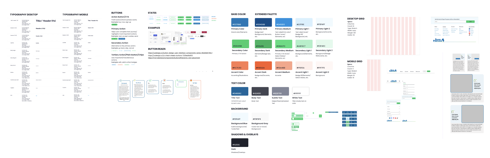
What we built:
- A standardized typography system to establish clear hierarchy and improve readability
- A defined color palette with extended variations to support both product and marketing needs
- Reusable UI components, including buttons, forms, cards, and navigation elements
- A responsive layout system to ensure consistency across multiple devices
- Defined interaction states to support scalable and predictable UI behavior
Impact:
- Established visual and functional consistency across platforms
- Reduced design and development effort through reusable components
- Enabled faster iteration and scalable rollout of new features and campaigns
Iterative process: We continuously iterated on our design system whenever improvements were needed across the entire digital ecosystem.
Our research was conducted iteratively across different phases of the project. As we worked on the design system, website, and course experience, we continuously gathered insights through interviews and usability studies.
Website Redesign (Improving Clarity & Navigation)
One of the major challenges we identified was the need to build a cohesive design system while also improving our outdated website. As we moved toward creating a more unified ecosystem, redesigning the website became a critical next step.
When I joined the UX team, there were parallel efforts underway. While part of the team focused on advancing the design system, we also initiated a research phase to better understand the current website experience and user needs.
As part of this effort, we conducted both user interviews and usability studies:
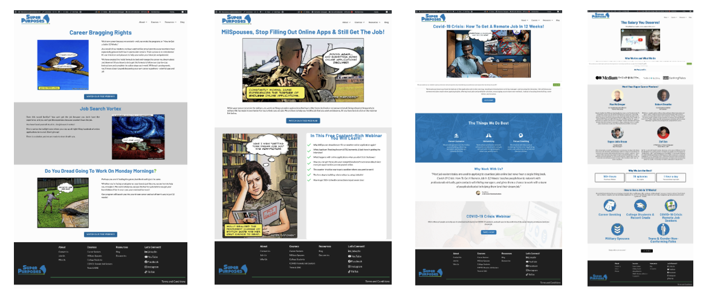
- User interviews helped us understand user goals, expectations, and pain points
- Usability studies allowed us to evaluate how users interacted with the existing website and identify friction points
We conducted research with:
- 10 participants for user interviews
- 10 participants for 1:1 usability testing sessions
To ensure efficiency and team involvement, each UX designer was responsible for:
- Conducting 1 user interview and 1 usability testing session (2 participants per designer)
- Documenting findings and sharing insights with the team
We then synthesized the insights collaboratively through weekly workshop sessions, where we:
- Identified recurring patterns and themes
- Prioritized key usability issues
- Aligned on opportunities for improvement
This structured and collaborative research approach enabled us to build a strong, evidence-based foundation for redesigning the website and aligning it with our broader design system goals.
Here is the user research findings :
We prioritized design decisions by grouping opportunities into high, medium, and low impact based on their effect on user experience and business outcomes.
High-impact items addressed critical issues like clarity, trust, and usability, while medium priorities focused on improving engagement and scalability.
Low-impact efforts refined the experience with incremental enhancements, helping us balance quick wins with long-term improvements.
Note: For each phase of user research, we categorized the findings into high, medium, and low priority based on their impact on course design, marketing campaigns, and website redesign
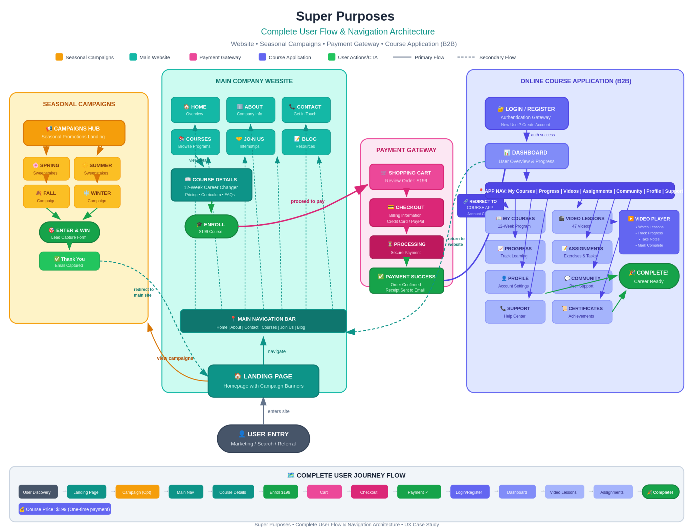
Research Keyinsights
The website improvements should focus on clarifying the value proposition, simplifying messaging, and fixing navigation and usability issues to create a smoother user experience. The platform should also become fully responsive across mobile and tablet devices while using more professional and brand-aligned visuals. In addition, implementing a consistent design system, improving content structure, and maintaining consistency in UI elements such as layouts and logos will strengthen the overall experience. Smaller enhancements like micro-interactions and improving information accuracy and clarity will further improve usability and user engagement.
What we improved:
- Redesigned information architecture for clarity
- Updated outdated content and visual system
- Introduced clear pathways to courses and coaching services
- Improved mobile and responsive experience
Impact:
- Improved user clarity and navigation flow
- Created a foundation for conversion-focused redesign
Process & Team System Design
As we progressed with research and implementation, we used Miro to analyze user flows for website navigation and to develop low-fidelity wireframes. During this phase, we identified a key process challenge within the team workflow.
To move from wireframes to final mockups, UX designers depended heavily on content designers, graphic designers, and developers for inputs such as copy, visuals, icons, and animations. This created frequent bottlenecks, where teams were often waiting on each other’s deliverables, leading to delays in the overall development cycle and increased developer idle time.
As the team scaled, these collaboration inefficiencies became a major blocker. To manage work and improve coordination, we also used Monday.com for project and task tracking. However, it became clear that tool usage alone was not enough to solve the workflow dependencies.
To address this, we established a more structured and standardized cross-functional process. The goal was to reduce dependency bottlenecks, improve parallel workstreams, and ensure that UX designers, content creators, and developers could work more independently and efficiently.
By defining clearer handoff processes and expectations early in the workflow, we improved team alignment and reduced delays caused by sequential task dependencies. This helped increase overall productivity and allowed the team to deliver work more efficiently across the digital ecosystem.
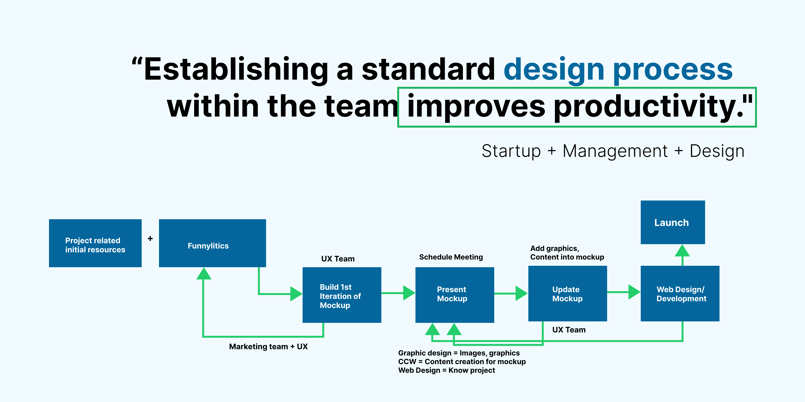
What I implemented:
- Structured cross-functional workflow (UX → Content → Design → Dev → Review)
- Early collaboration model between designers, writers, and developers
- Defined handoff and feedback loops
- Introduced documentation practices to reduce knowledge loss
Impact:
- Reduced delays caused by dependency bottlenecks
- Improved team collaboration and clarity
- Increased delivery speed and quality consistency
Once we implemented the new process across the team, it became easier for everyone to focus on their work without waiting on dependencies or being blocked by others. This allowed us to move more efficiently from wireframes to high-fidelity mockups.
The existing website included a Home page, About Us page, Course page, and Contact page. However, there was no clear end-to-end flow for users to purchase and access courses. During the redesign, we focused on identifying missing user flows, with a strong emphasis on the payment gateway and checkout experience. This led us to introduce a structured e-commerce and conversion system that enabled users to seamlessly purchase and access their courses.
E-Commerce & Conversion System
Based on user research findings, the website did not have a cart or a clear navigation flow for purchasing courses. To address this, we focused on building an e-commerce and conversion experience that allowed users to explore courses, add them to a cart, and complete purchases through an integrated payment gateway. The platform lacked a direct and seamless way for users to buy courses.
In addition to courses, users also needed the ability to purchase services such as 1:1 coaching and group coaching. We therefore designed a unified purchase flow that allowed users to easily browse, select, and buy both courses and services through the cart experience.
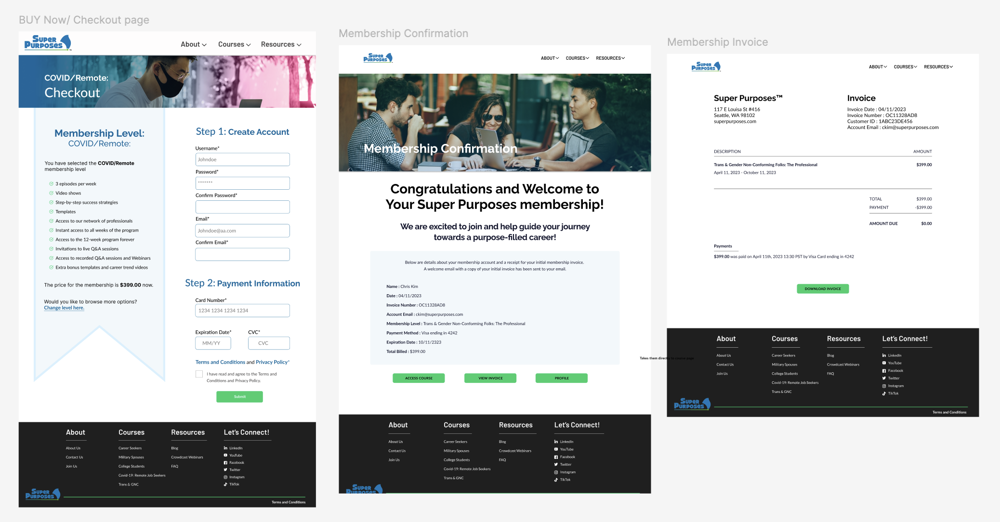
What we introduced:
- Cart system for course selection
- Payment gateway integration
- End-to-end purchase flow within the platform
Impact:
- Enabled direct monetization through the website
- Reduced friction in the conversion journey
- Improved business scalability
Our website was nearly ready for launch, but we needed to better understand the business strategy behind it—specifically how to generate revenue from courses and which offerings align with current market demand. We also refined our messaging to clearly communicate that Super Purposes helps individuals achieve a purpose-driven career rather than just a ‘dream job.’
As part of this effort, we evaluated our social media presence and email newsletters to understand user engagement and traffic sources. To improve visibility and align with market trends, we began focusing on marketing and growth strategies that highlight the uniqueness of Super Purposes’ services and attract the right audience.
Marketing & Growth System:
There was no structured marketing system in place to drive traffic or support growth. To address this, we focused on building a data-informed marketing strategy supported by competitor analysis.
We analyzed 10 competitors—5 focused on online courses and 5 on career coaching services—to better understand pricing models, feature offerings, and positioning. For course platforms, we studied Udemy, Coursera, Skillshare, MasterClass, and Career Contessa. For coaching and service-based pricing, we evaluated Super Purposes, The Muse, Find My Profession, The Remote Job Club, A Path That Fits, and Cultivate.
This analysis helped us identify gaps and opportunities to:
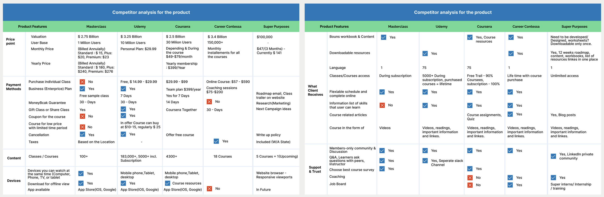
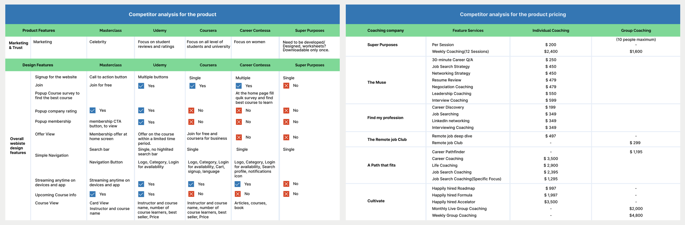
- Define affordable and competitive pricing
- Introduce differentiated features aligned with user needs
- Design campaign strategies and incentives to improve engagement
We then applied these insights to structure our pricing model and feature set across the website, courses, and marketing campaigns. While many course platforms offer extensive content libraries, we chose to simplify our course experience with focused content, clear navigation, and purpose-driven learning paths tailored to our audience. Competitor insights served as a reference point, but our goal was to create a more accessible and user-centered offering.
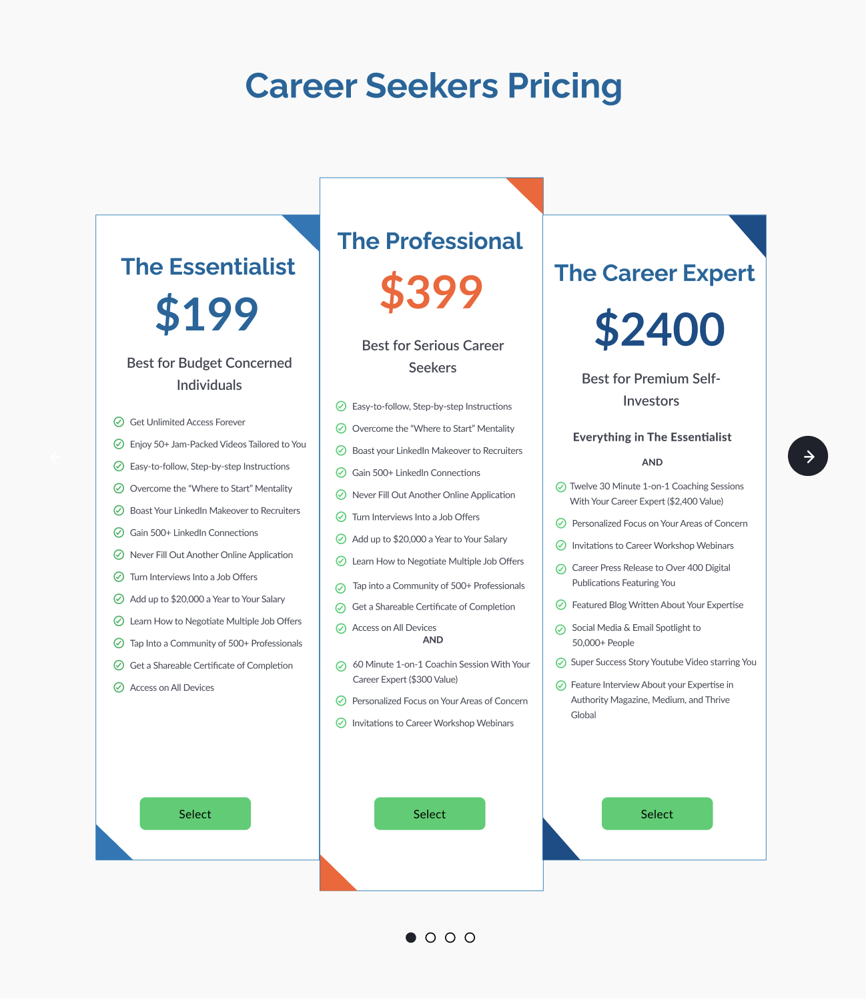
Finally, we established a multi-channel marketing approach, promoting campaigns through social media platforms, email newsletters, and channels like Twitter, Instagram, and Facebook to increase reach and drive traffic.
As well as, we prioritized business opportunities based on their impact on revenue, growth, and overall strategy. At a high level, we focused on addressing a key missing segment—career switchers, who represent a significant portion of the market—while also reworking the pricing strategy to improve affordability and clarity. Additionally, we aimed to increase conversions by reducing user confusion and friction across the experience. At a medium level, we worked on reducing dependency on direct support by introducing self-service content, and improving retention through better guidance and user success support. At a lower level, we identified opportunities to optimize internal efficiency through scalable systems and gradually improve user engagement through ongoing content expansion.On the other hand we identified the user research (Market research and competitor analysis key findings.
What we designed:
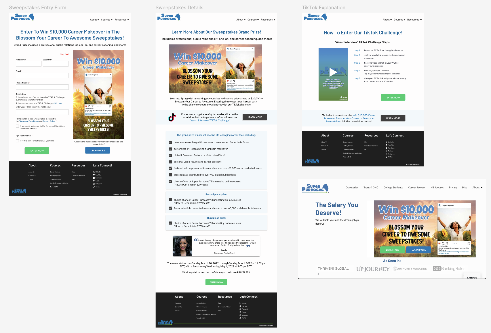
- Campaign-specific landing pages, Scalable templates for marketing use, Consistent CTA and conversion-focused layouts, Seasonal campaign rollout strategy
Impact: Improved traffic generation strategy , Enabled structured promotional campaigns, Increased visibility of courses and coaching services
Finally, after investing significant effort into the website, services, and marketing campaigns, we shifted our focus to defining the core product—what customers would buy and how it could drive revenue and business growth.
To ensure product–market fit, I led user and market research by conducting a survey with 400+ participants. Based on the insights, we identified a strong demand among career switchers, a segment that was previously underserved.
From this data, we created an ideal persona—Gabriel, the Career Switcher—representing the needs, goals, and challenges of this audience.
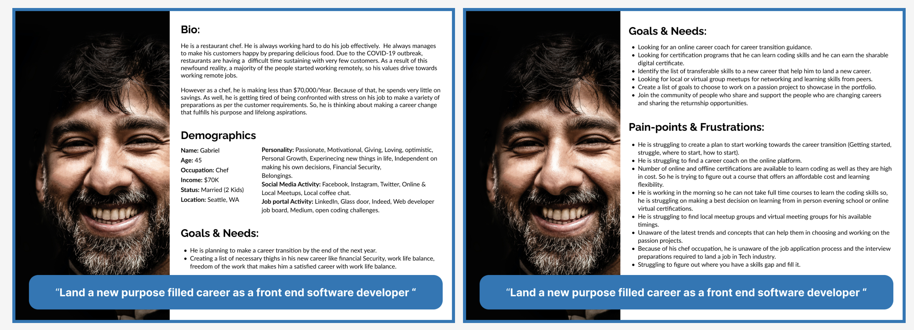
Key Outcomes: Identified high demand for career transition support, Defined a clear Career Switcher persona based on real user data
Impact: Informed course structure and content strategy , Aligned product offerings with real market demand, Strengthened marketing and positioning strategy
Course Platform & Onboarding Experience
The course experience relied on a third-party platform, Kartra, which resulted in a fragmented user journey. Due to privacy policies and internal restrictions, I’m unable to share direct access to the platform. However, internal screenshots revealed usability challenges, including complex navigation and the presence of third-party promotional content that distracted from the Super Purposes experience.
We did not conduct separate research specifically for the course platform. Instead, we leveraged insights from user research, marketing research, and competitor analysis, which helped identify key improvements for the course experience and onboarding flow.
We prioritized improvements to the course experience based on impact. At a high level, our focus was on providing clear course information, defining expected outcomes, and improving onboarding steps, while also reducing friction in course access caused by third-party dependencies like Kartra. At a medium level, we aimed to enhance the overall learning experience by improving in-course navigation, offering post-enrollment guidance, and introducing structured career support such as resume building, LinkedIn optimization, and job search strategies. At a lower level, we identified opportunities to further refine the experience by improving course tracking and user profile features, as well as adding technical troubleshooting support and FAQs to assist users when needed.
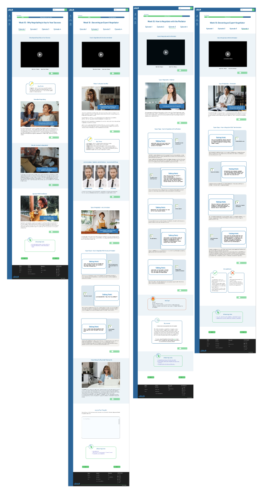
What I designed: Integrated course access system within the platform, Onboarding flow for new users from signup to course access, Simplified authentication and secure login experience, Unified learning dashboard experience
Impact: Reduced dependency on external tools, Improved user retention through seamless onboarding , Created a more controlled and scalable learning experience
Overall impact on the entire super purpose eco system:
Through this transformation, the Super Purposes ecosystem evolved into a more structured and scalable platform:
- Unified website, course, and marketing experience
- Enabled direct course purchases and improved conversion flow
- Reduced reliance on third-party systems (cost efficiency)
- Improved usability and user engagement
- Established scalable foundation for future growth
- Strengthened cross-functional team efficiency and delivery speed
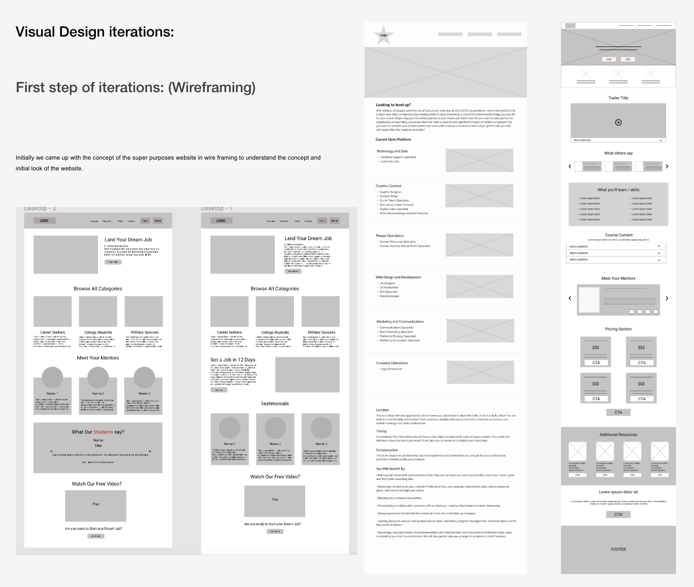
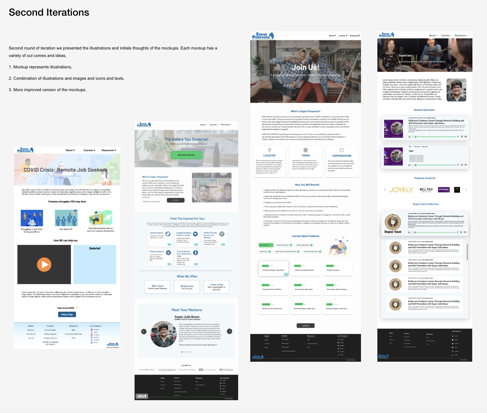
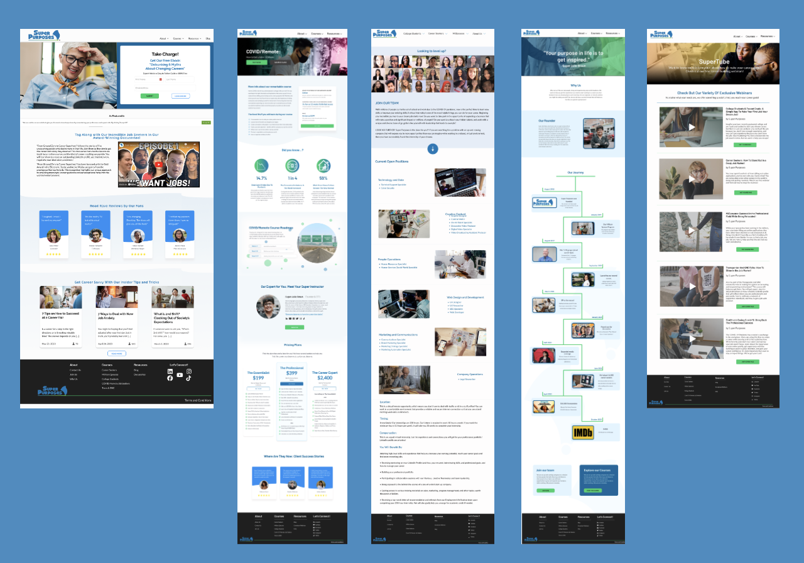
Key Learnings:
This journey shaped my approach from execution to system-level thinking:
- Great products require strong systems, not just good screens
- Leadership is about enabling teams, not just managing work
- Process design is as important as product design
- Alignment between user needs and business goals drives impact
- Scalable design systems are essential for long-term growth
This 3-year journey at Super Purposes was not just about designing interfaces—it was about building systems, leading teams, and shaping a product ecosystem from the ground up.
It helped me grow from a hands-on designer into a leader who thinks across users, business, technology, and team systems simultaneously.
People & project Management:
Beyond design, I took ownership of team growth and operations. I also collaborated closely with the founder on project planning and people management initiatives.
Project planning: Working closely with the founder, lead designer, and developer, we created a project roadmap to support the launch of the website, online courses, marketing campaigns, and career coaching service campaigns. We also focused on improving processes and collaboration across cross-functional teams to ensure more efficient execution and delivery.
Web development team management: At the time, Super Purposes was building its digital ecosystem primarily on a CMS platform, which limited flexibility for both the UX and development teams. To improve customization and scalability, we decided to hire developers with foundational expertise in HTML, CSS, and JavaScript, enabling the team to build more flexible and scalable web solutions.
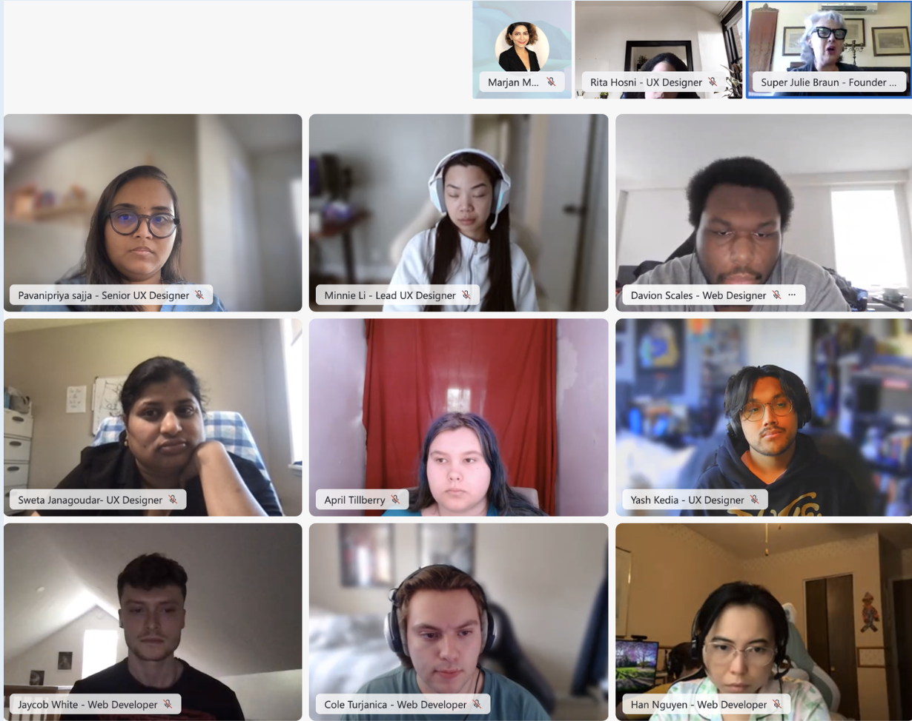
I led the hiring and onboarding process for three web developer interns and later promoted one based on performance and credibility. As their lead, I conducted 1:1 meetings, provided project guidance and mentorship, and supported them in overcoming technical and workflow challenges. I was also involved in onboarding, technical interviews, candidate evaluation, and assigning projects based on individual strengths and project priorities
UX team management: At Super Purposes, I led a UX team of five members, including one additional team lead. The team consisted of designers and researchers with clearly defined responsibilities to ensure efficient delivery within tight timelines. We hired a designer with strong expertise in design systems and documentation, while two designers focused on high-fidelity mockup creation, and the remaining two were responsible for user research and usability studies.
As their lead, I conducted regular 1:1 meetings, provided project guidance and mentorship, and supported the team in overcoming design and research-related challenges. I was also involved in onboarding, conducting technical interviews, evaluating candidates, and assigning projects based on individual strengths and project priorities.
Impact : We built a stronger and more structured team by clearly defining roles, responsibilities, and workflows, which helped improve overall collaboration and efficiency. This structure also enhanced team accountability and motivation, as each member had ownership over specific areas of work and deliverables. As a result, we created a more sustainable environment for growth, where team members could continuously develop their skills while contributing effectively to project goals.